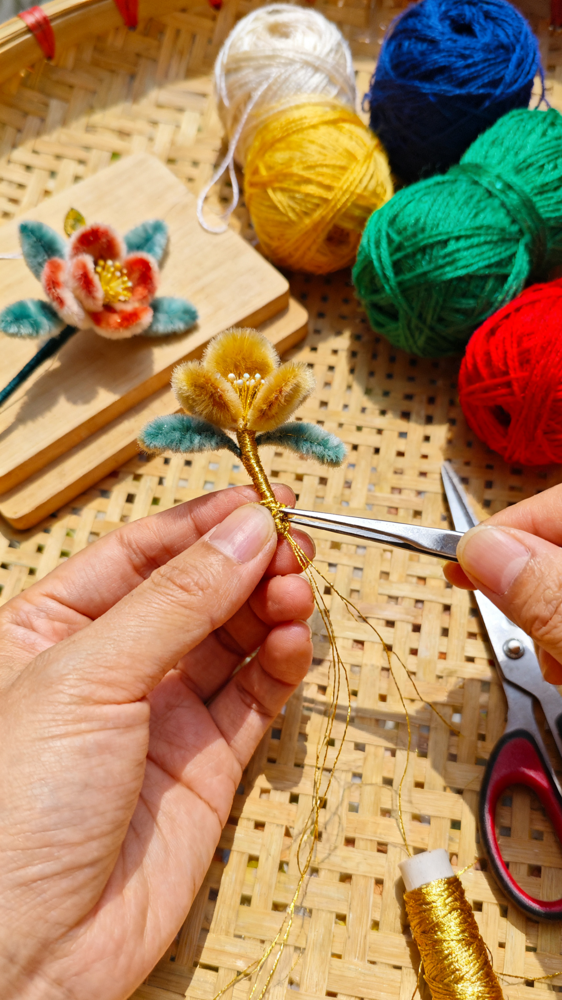
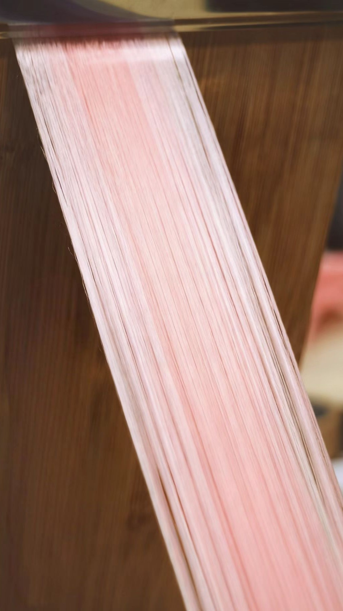
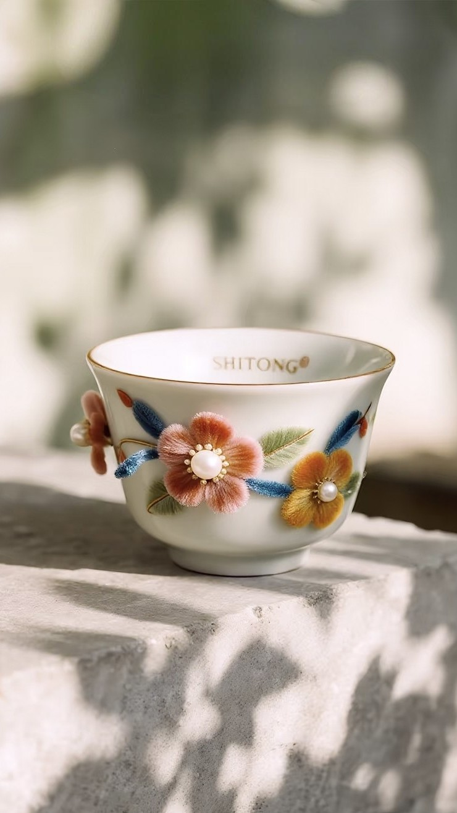
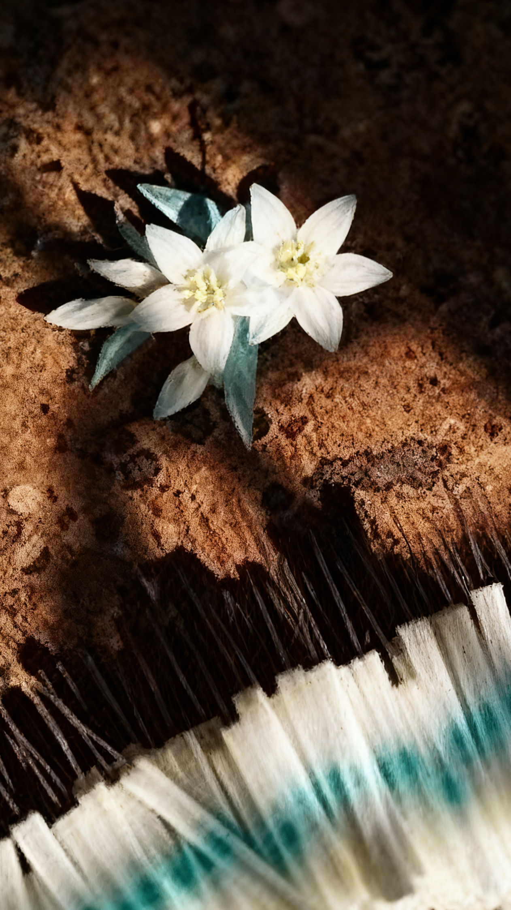
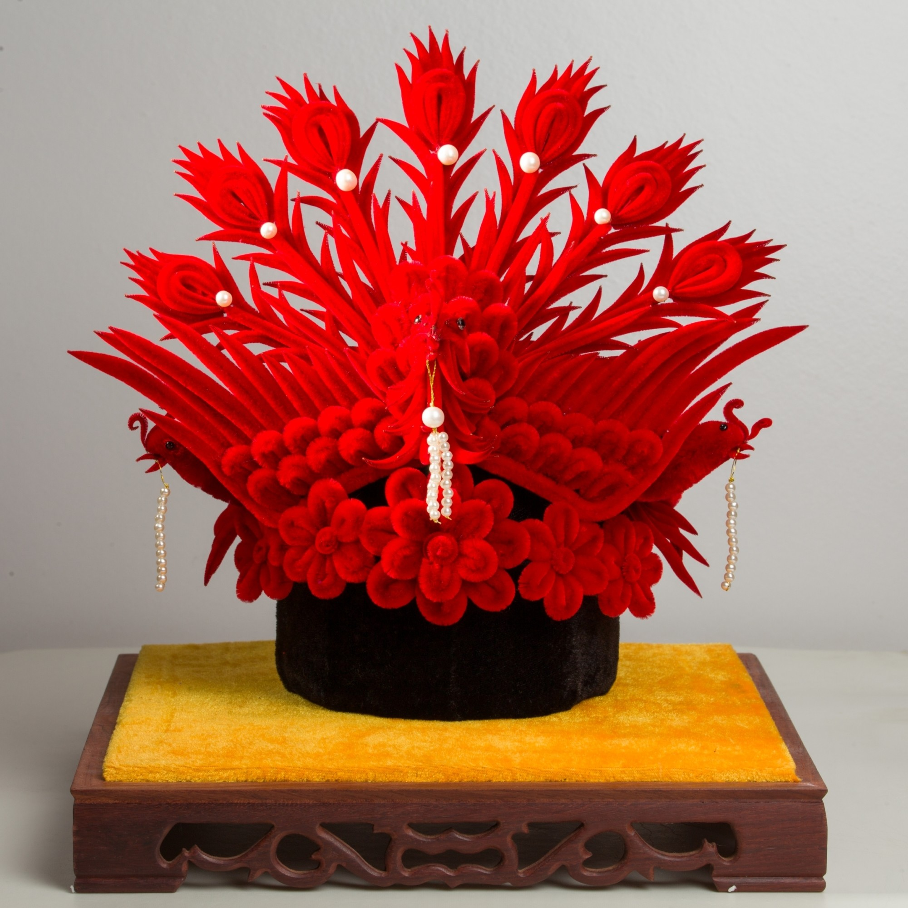
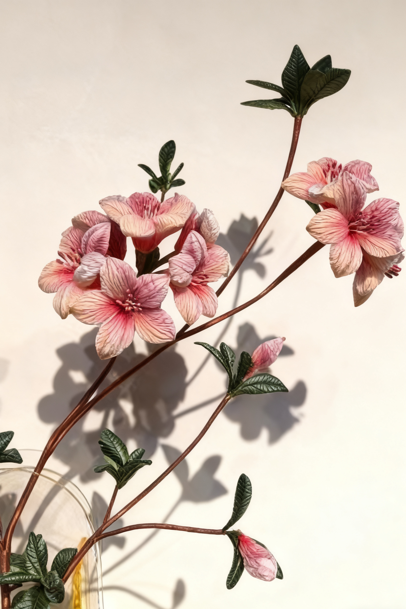
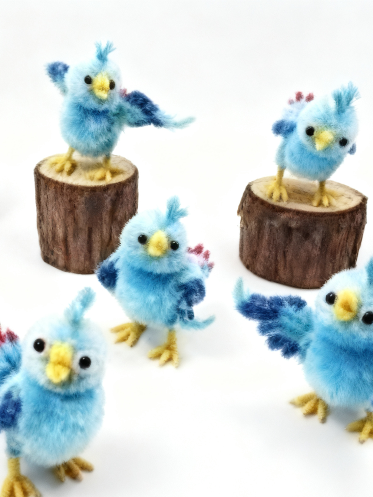
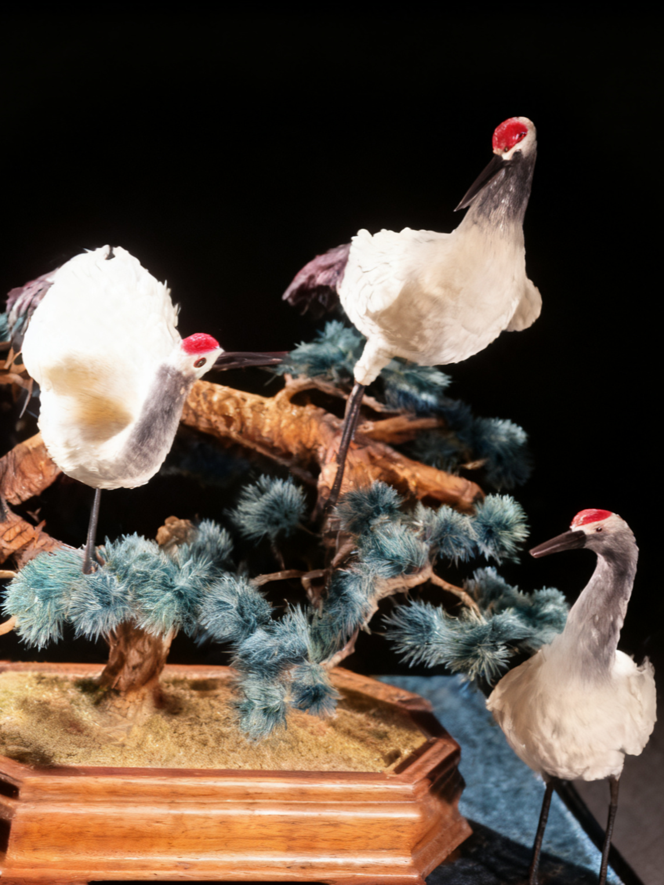

发展历史

制作工艺

传承创新







绒花，谐音“荣华”，古称“宫花“或"喜花”。始于唐代，盛于明清，是中国传统手工技艺之一。它不仅是惊艳千年的装饰艺术，更承载着对富贵吉样的美好析愿，是中华优秀传统文化的鲜活载体。
绒花以天然蚕丝为原料，经染色、软化、勾条、打尖、传花等数十道工亭制作而成，匠人凭借一双巧手，将柔软丝线塑造成永不凋雩的四季芳华。 绒花造型典雅，色彩艳丽，取材广泛，既有梅、兰、竹、菊等自然花卉，亦包含龙、凤、样云等传统吉祥纹样。 其作品形态生动，色彩明，聚着人们对自然美学的理解与对幸福生活的向往。
2007年3月24日,绒花制作工艺被列入江苏省非物质文化遗产名录,成为中华民族珍贵的文化遗产。
南派绒花则以南京绒花和扬州绒花为翘楚，风格偏向写实，形态逼真，色彩通常柔和典雅，具有更强的观赏性。
南京绒花是南方绒花的杰出代表，以其精湛的写实手法和高雅柔和的色彩著称。通常我们所说的“非遗绒花"主要指的就是南京绒花。 造型写实通真，形态饱满，尤其擅长制作花卉、凤冠、禽鸟等，作品精致繁复。
扬州绒花被誉为工艺品中的“小家碧玉”。它在唐代就已作为“彩花”进入宫廷，深受妃嫔喜爱。其工艺发展经历了"绕绒花”、“刮绒花"到更精湛的“滚绒花"三个阶段，技艺愈发精湛。


北派绒花以北京绒花和天津绒花为代表。北京绒花作为北派绒花的代表,至今已有三百多年历史,并于2009年被列入北京市级非物质文化遗产名录。
擅长运用抽象的造型和组合来表达吉祥的寓意，风格端庄大气，色彩较为艳丽。与南京绒花在基本制作流程上相似，但在造型上更显抽象与夸张。 尤其特色的是，北京线花擅长制作绒鸟及各种小动物，因而常被称为“绒鸟"。
北派绒花的造型与题材不拘泥于具体形态，常见由蝠、寿桃、文字等符号化元素组合而成的吉祥图案，如用“福”“禄”“寿”“唐”字和鱼形组成“富贵有余”，用葫芦和蝠蝠寓意“子孙富贵”。
